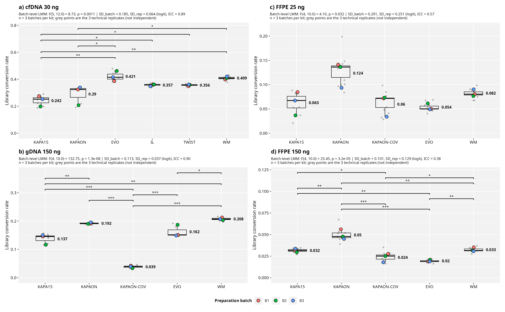

Statistics
The regenerated Figure 1
Same four-panel layout, same kit ordering, same publication theme. The analysis unit is now the batch, the brackets come from the mixed model, and the variance components are on the face of the figure.

manuscript/main_figures/conversion_rate_batchlevel_20260817.png ·
15.36 × 9.5 in, 300 dpi. Panels a–d: cfDNA 30 ng and FFPE 25 ng on the top row, gDNA 150 ng
and FFPE 150 ng below. Large coloured points are the three batch means (the experimental
units); small grey dots behind them are the individual libraries (technical replicates).
Brackets are Holm-adjusted pairwise contrasts from the batch-level mixed model. Each panel
subtitle carries the Kenward-Roger F test and the between-batch / within-batch SD with the
resulting ICC.
What changed relative to the current Fig 1
Current plot_conversion_rate_20260512.R | New plot_conversion_rate_batchlevel_20260817.R | |
|---|---|---|
| Analysis unit | 9 libraries per kit | 3 batches per kit |
| Test | Kruskal–Wallis + Dunn | LMM, logit(y) ~ kit + (1|kit:batch), Kenward-Roger df |
| Scale | raw proportion | logit, back-transformed for the axis |
| Points shown | 9 libraries coloured by batch | 3 batch means coloured by batch, libraries as grey dots behind |
| Effect sizes | none | Hedges' g per contrast, in the companion TSV |
| Batch effect | not reported | between/within SD and ICC in every panel subtitle |
| EVO cfDNA run | first run, hard-coded in a grepl() | first run by default, switchable via EVO_CFDNA_RUN |
Reproducing it
cd ~/study2_kit-complexity-evaluation
Rscript program/plot_conversion_rate_batchlevel_20260817.RReads manuscript/data/conversion_rate/conversion_rate_*.txt and writes three
files into the working directory:
conversion_rate_batchlevel_20260817.png— the figure.conversion_rate_batchlevel_stats_20260817.tsv— 45 contrasts with Holm p and Hedges' g, plus the omnibus and variance components.conversion_rate_batchlevel_descriptives_20260817.tsv— 21 rows of per-kit mean, SD and n.
Both TSVs are already copied into manuscript/data/ and are rendered on the
results tables page.
Still outstanding for submission
Clinical Chemistry wants TIFF or EPS with embedded fonts, supplied as separate files.
Everything currently rendered in main_figures/ and
supplementary_figures/ is PNG, so a format conversion pass is still required. The
figure numbering also needs to be resolved: there is no Fig 2 in main_figures/, no
S2 in supplementary_figures/, S3 is used twice, and the 20260512 FADE renders are
stale relative to the 20260610 versions.